In the lecture of our first lesson, we looked at basic HTML and how to use headings, paragraphs and images. I have done quite a bit of HTML/CSS at high school, however I have not done it since. This lecture was a good refresher for how to set up a file and add the basics.
Below is a screenshot of me practicing the skills and making sure I could get VSCode to work:

In class this week, we learnt about user personas and empathy maps. We did two group activities on this to start to think about how to construct these and what kind of things we need to think about when creating them. As I am sick this lesson, I attended class on Zoom and my group created a Miro Board to do the activities.
This is our User Persona:

This is our Empathy Map:
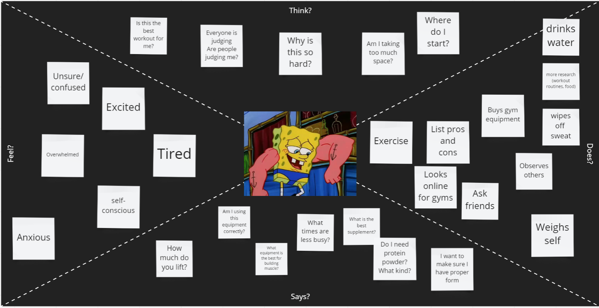As I am an Interaction Design major and did the Design for Experience paper last trimester, I have looked at user personas before however not in much detail. Empathy maps were a new tool I learnt about today and found that they will be useful when learning about my end users as I will have to think about the potential user's actions as well as their thoughts and feelings, which is something that will influence the way I design my website.
I think that these tools are going to be useful for designing a website as they allow us to think more deeply about the needs of our users and how we can cater to them. They can give us a specific enough demographic that is also broad enough to be aware of the differences in people's needs. By using these tools I will be able to better design a website that fulfils the needs and wants of the user and will be able to create a successful outcome.
In class today we looked at user and designer goals, and how to identify shared goals. We are able to do this using venn diagrams to find the common ground between the two groups.
I think this is going to be a useful thing to do when coming up with the concept for my website as it will help me think about my user more and how I can design my website to fit their needs. It will also give me guidelines to go back to as I create my website to make sure I am following my brief and creating an outcome that is fit for purpose.
Aesthetic websites
Possible characters
I have been a little bit stuck on my assignment as I am unsure what character to choose for my user persona. I have created a list of characters from things I have recently watched and childhood favourites, so my next steps will be to pick a few of these characters and have a bit of a brainstorm for each of them to see who I could use for my final character.
Over the weekend I have been working on creating the user persona and empathy map for my chosen fictional character. I have been having a bit of trouble deciding who to use but, after creating a long list of possible characters, I have settled on using Homer Simpson. he has a lot of personality traits and weaknesses that I can develop a website for. I have decided to focus on his lack of DIY skill for the topic of my website. In several episodes he attempts to build or fix things that go wrong, in particular when he attempts to build a BBQ but drops the instructions in the cement. I am thinking of creating a website that will help people with basic DIY skills, bith around simple projects and tool how-tos.
Below is an image of my user persona and empathy maps. I have not had time to lay them out nicely so I have just listed all of the ideas and will create the layout later.

Overall, I am happy with my choice of character as I feel there is a lot of material to base my idea off of, even if I change my mind and move away from the DIY idea. My next steps will be to make the venn diagram of goals and to layout the persona and map in a nice document.
Today in class we discussed user flow diagrams and customer journey maps. These are both things I have done before in previous courses so I already knew how to make them and what to include. We did an activity using the Spongebob example and created a user flow and customer journey map for his scenario.
Here is the user flow:

Here is the customer journey map:
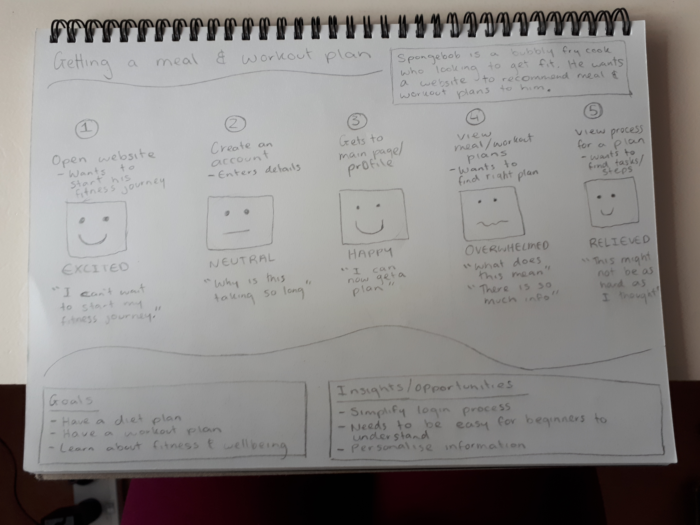I think that these are going to be useful when creating my website/brief, as it will allow me to think more about how my user/character would actually use my website and what parts of it I need to focus on so that I can make an outcome that solves the user's problem.
Here is the hand drawn version of my box model:
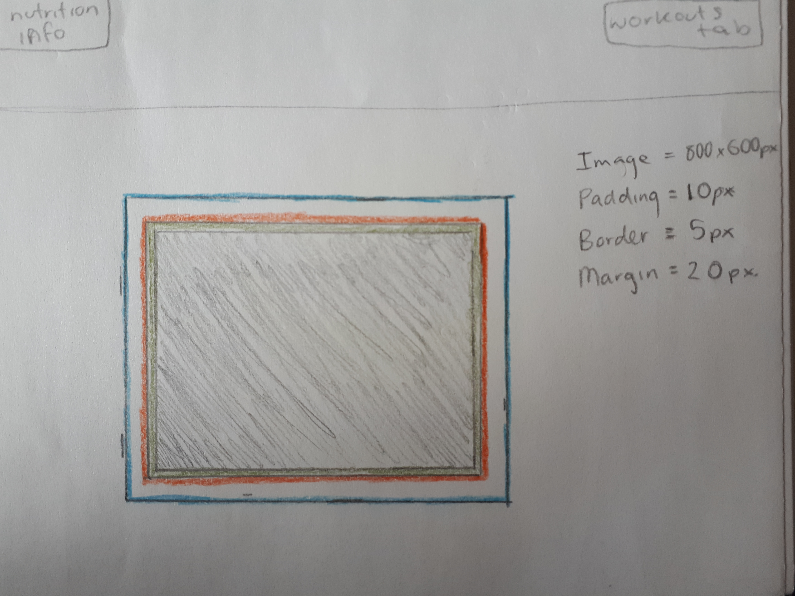Here is the coded version:
Today in class I continued to work on my assignment. I hadn't done any work on it since last class as I have been busy with other assignments but I am feeling on track with it. I completed my Venn Diagram of goals and started to put my user persona, empathy map and venn diagram onto a doument to lay it out nicely. This is what it looks like so far:

I still need to make it look nicer and lay it out a bit better but I think I am on track to finish it by next Monday. My next steps are to make my user flow diagram and customer journey map, and the do the report write up for each of them.
Today I worked on my assignment and got quite a bit done. I was focusing on my user flow diagram and customer journey map so that I can get some feedback on them before hand in.
I completed my user flow diagram by first sketching it out on paper and then transferring it to Illustrator. I have decided to have two main flows for my page, one where you can search for articles and guides, and forum where you can ask questions. I am quite happy with how this map has turned out and it has given me an idea of how I will structure my website.
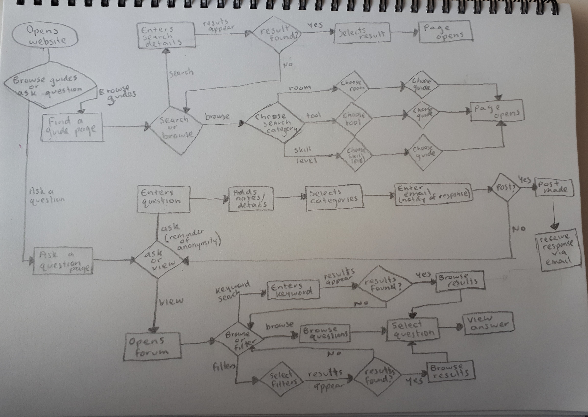I then started on my customer journey map. I have been a bit unsure on what the journey is exactly, whether it should be a possible route through the website or the steps they would take without the site. I have decided to show how the user might use both functions of the website in tandem and have identified some things that I should add to the website to make it fit my end user. I will get some feedback on this to see if I have done it right. I also think I might need to change the text so it sounds a bit more like my character (Homer Simpson).
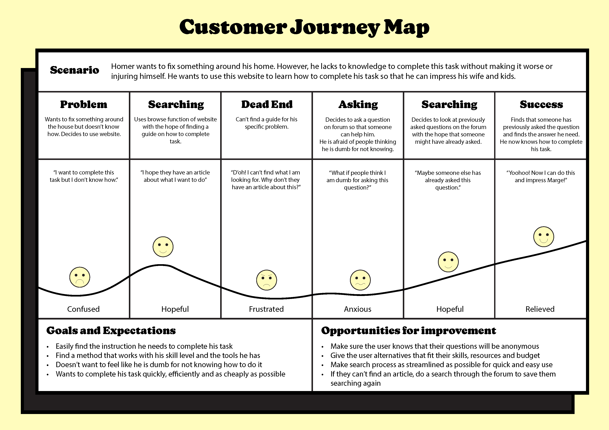I also added a nicer layout to my user persona, empathy map and venn diagram. I may still tweak this before the hand in though.


Overall, I am happy with how I have progressed today. My next step is to send this to a tutor for some feedback. I will then touch it up and work on the write up to go with my diagrams.
After receiving feedback on Thursday, I have strated and completed the write up for my report. There was nothing for me to really change on my diagrams so I was very happy with this. I have written about each of my diagrams and why they are important, however after receiving some more feedback I will need to add to my description of my goals and talk about how I could apply them to a website.
I also edited my diagrams to fix up a few spelling mistakes.
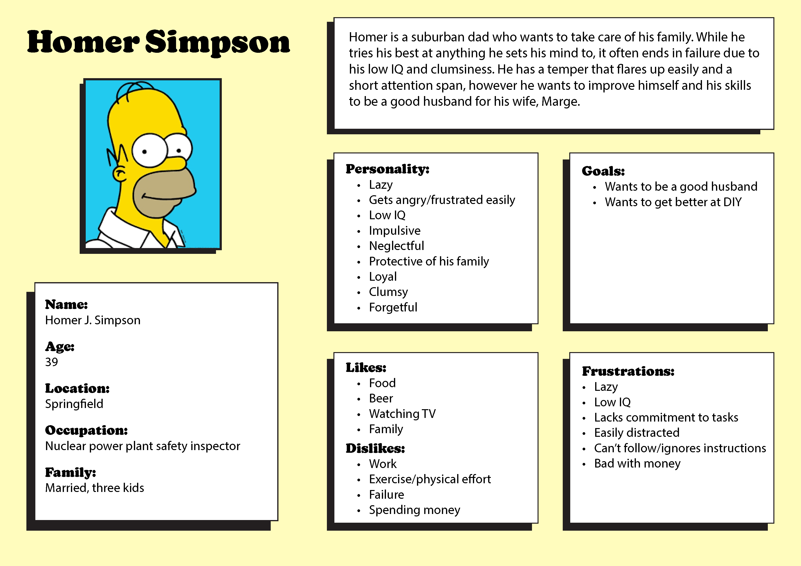 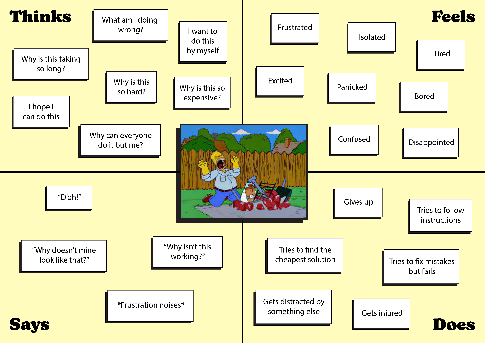 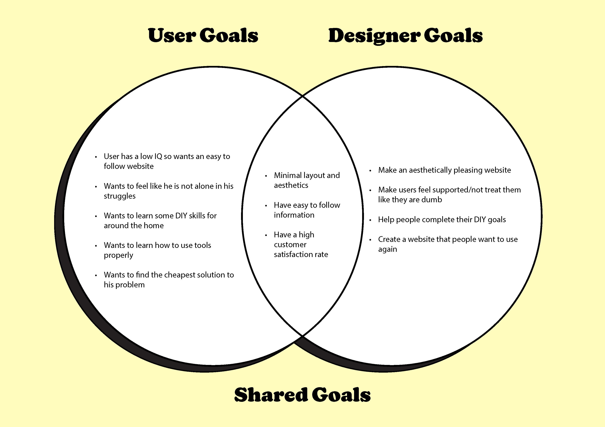 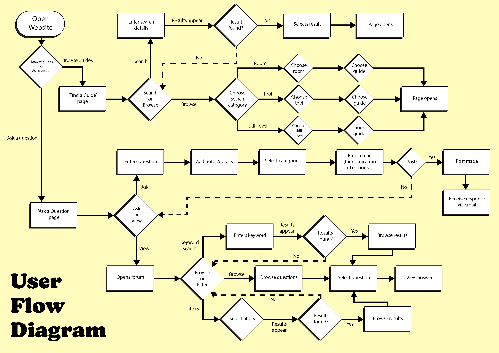 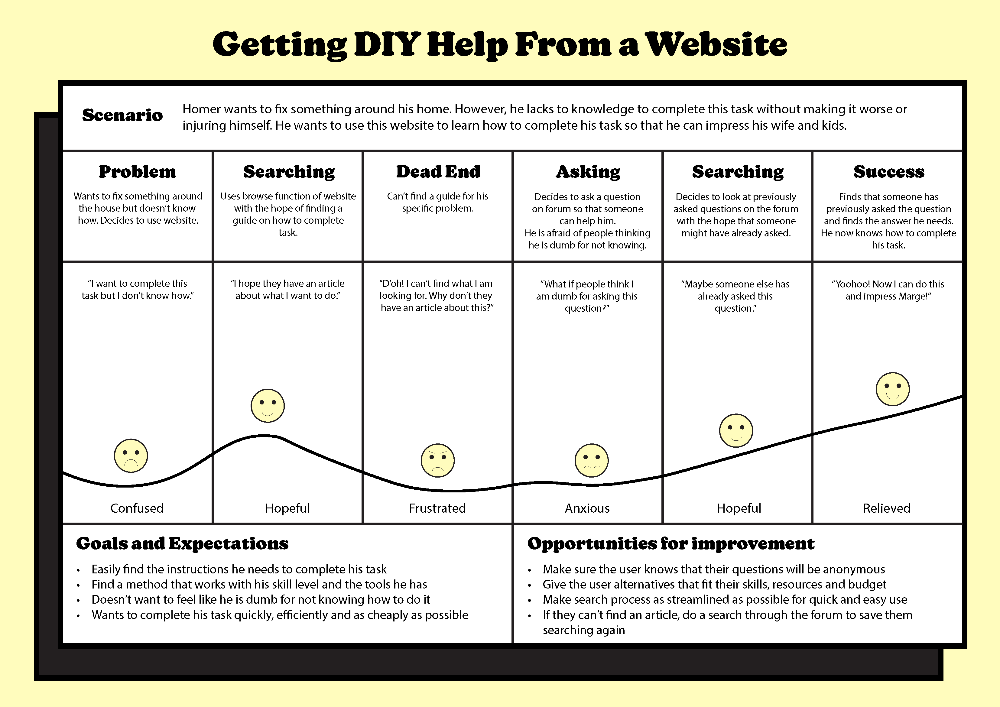Overall, I am happy with how this is progressing. I just have a few things to touch up before hand in on Monday.
Today I added the final touches to my report, adding some information to ny venn diagram page based on the feedback I received. I have now completed my report and have handed it in.
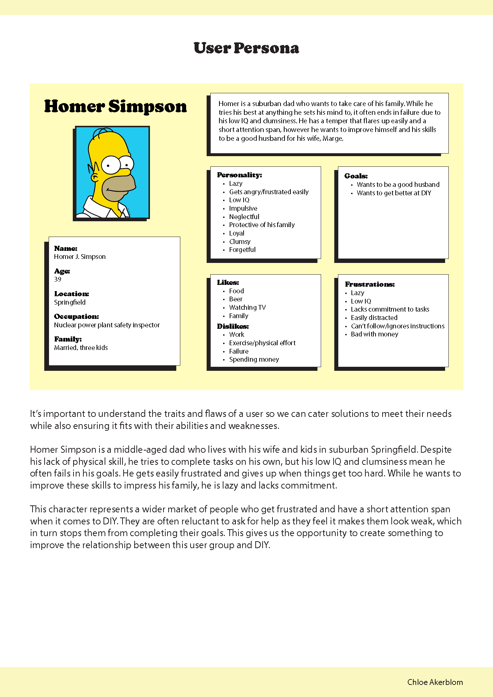

 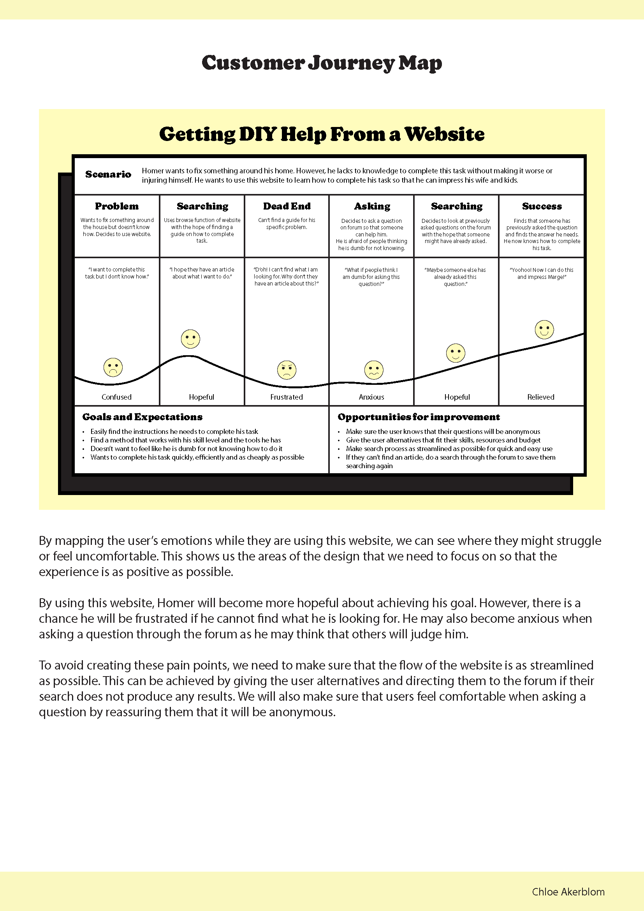
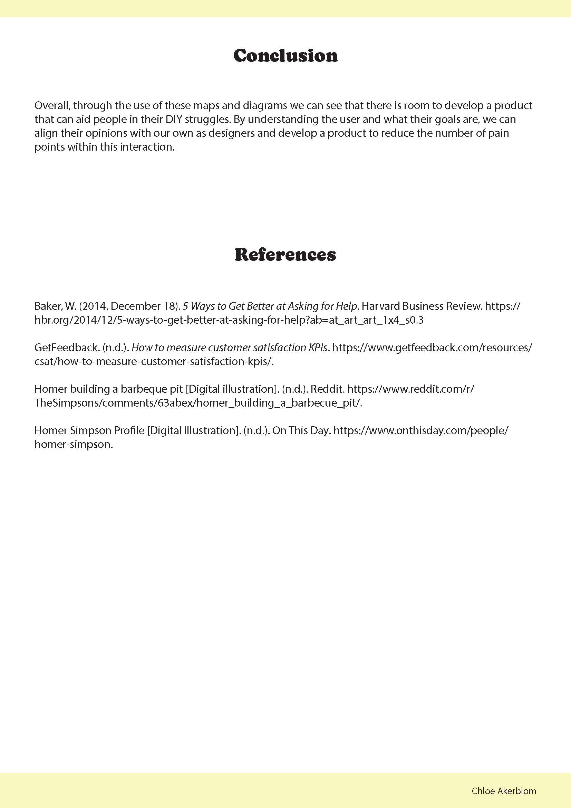
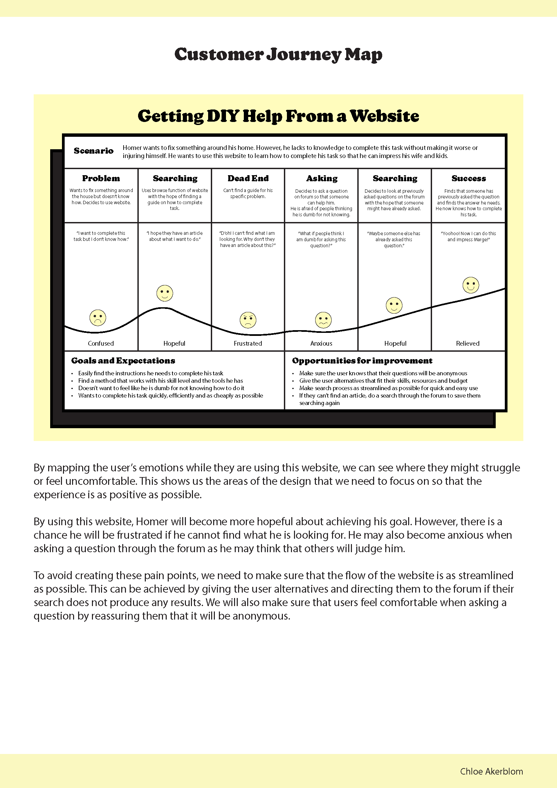
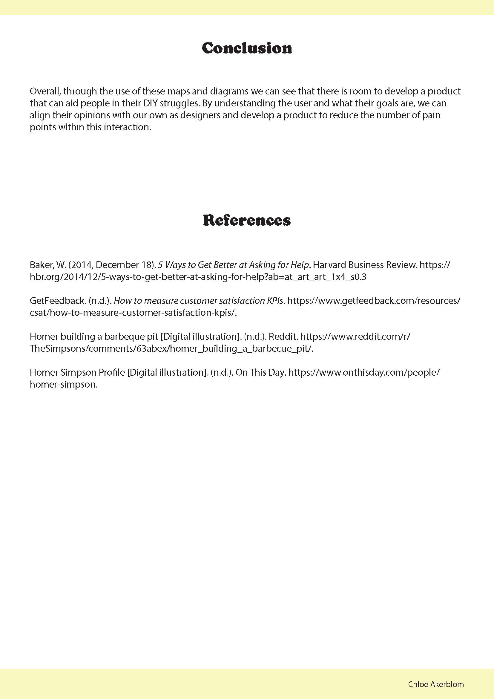
Overall, I am really happy with how this project has gone. I have enjoyed researching my user and thinking about their feelings and goals to help them improve a pain point within their daily life. I feel that this project will help me when completing the next assignment as I now have an idea of what my website needs to achieve and the key things to focus on. I also now have a wider range of tools I can use to help understand my user for future projects.
Over the break, I started doing some sketches of what my website might look like. I started out by printing off my user flow diagram from the last project and grouping the steps together to figure out what my web pages were going to be.

I settled on having nine different pages:
I then began to sktech a few different layouts for my website. Below are the sketches of the design I settled on. I have chosen to use a simple linear grid layout so that it is easy for my users to follow and understand.

Today's lecture discussed colour theory in web design, particularly the importance of contrast. Having contrasting colours allows elements to stand out and create hierarchy to the page. It also makes the page look nice, as long as the colours don't clash). Contrast can come from lightness, saturation and opposites on the colour wheel. One new thing I learnt today was about colour dominance - having lots of variation in the saturation of colours. I think this is a very effective technique and is something I should utilise in my website. It will make the most important elements on my page stand out, such as the call to action buttons, so that the users don't have to hunt for important information.
The activity for today was to make a copy of the grid layout shown in the slides. After looking back at the tutorial video on how the grid layouts worked (as it had beena while since I had first watched it) I managed to get the layout quite easily. However I did get a bit stuck with getting the middle row of columns to work. I realised thought that I was missing the 'display: grid;' line of code, and once I had put that in it all worked fine. This skill will be particularly useful when it comes to coding my website as I will be able to make even and effective grids that will be responsive to different screen sizes, which is very important since my website is going to have a very grid-based layout.


After completing my sketches over the break, in today's class I began creating my blockframes on Figma. I transfered the layout directly from my sketches.

Next, I created a moodboard to get an idea of what kind of colours I wanted to use for my website. I decided on using blue as the main colour for my website as it has been found to help people learn/focus better and is also quite calming and sparks creativity. To contrast, I have chosen yellow as my secondary colour to help highlight elements and add an optimistic feeling.
I then started to add these colours to my blockframes to start to build up my hi-fi prototype. I have chosen to add a beige colour as another colour option that is less bright to help distinguish sections. I have tried to follow the Law of Common Region to help group elements to make the layout even easier to follow. I am not 100% happy with the colour placements yet. I think the blue might be too pale as there is quite a low contrast dominance. I might use a darker shade in my next iterations.


Today's leture was about typography in web design. It discussed using approprate fonts regarding emotion and practicality, as well as hierarchy, weight and spacing. Choosing the right font is important, especially when the content of a website is wordy and/or important. It needs to be accessible to users by being large enough to read and simple enough to distinguish letters. The aesthetic of the font also has to match the vibe of the website. Choosing the right font for my website is going to be important so that it makes the information on the page easy to understand and doesn't draw focus away from the actual content. I think I will use a simple sans serif to keep it legible and modern.
Today we did in-class presentations and got feedback on our work. Overall, the tutors were happy with my progress so far, however they had a few comments. The main comment was around the scaling of elements. Everything was too big - something that was more obvious on screen than on paper. They also said that I should play around with a few different layouts, potentially making my images grids have less columns and having the images bigger. Another suggestion was that I could add some transparency to the images so that the text on top of them didn't have to have a box around it. They pointed out the inconsistencies in the headers, as each had a slightly different layout. Finally, they suggested some place where I could had some affordances to help the user navigate the site.
After receiving this feedback, I began to make some changes to my site. I stated by shrinking a lot of the elements to make them look more proportionate to the screen size. I then readjusted the layouts of a few pages, particularly the forum and answer pages. I moved the filters to the left side of the filter page and put the question grid next to it. I alternated the colours of each of the boxes to distinuish them from each other and I changed the size and colour of the 'Ask a Question' button. I feel like this layout looks a lot better than the previous version. On the answers page, I changed it so that there was one column of answers in the centre of the page and moved the 'Answer this Question' box to trhe bottom with a new carousel of suggested questions. I moved the text box as someone using the site is more likely to wan to see the answers rather than answer the question themselves, and I added a carousel as something I identified in my customer journey map was that people would want suggestions for alternative questions to helo them find the help they are looking for.
Across the whole design, I made the headers more consistent as well as the text alignments. I also changed my colour palette to use a dark blue rather than a light blue. This creates more contrast dominance and makes the website look a lot more professional. I think it looks much better now and suits the site more.

After making these changes, I got some more feedback from my tutors. Overall, they liked the changes I had made but had a few more suggestions:
After getting this second lot of feedback, I made most of the changes they suggested. There were a few I didn't manage to get to due to time constraints but I think what I didi change has made the website look a lot more professional.
I got rid of the large blocks of tan and decided to use them for little tags on the question cards. I also readjusted the layouts of the forum page based on the feedback and I feel that it looks a lot better now. I changed all of my buttons to be consistent across the pages (yellow with a white or black hover state, depending on the background colour of the page), and I used the Material Design icons, which I think really elevates the look of the page.
The other major chage I made was having carousels on the guide search page rather than a large grid. This was to break up the amount of content on the page and make it less overwhelming. This aligns with Miller's Law.
I then added the rest of my content, such as images and text, and made some final adjustments to make sure everything still looked right. I used an online font scaling tool to help make sure my text hierarchy was proportionate. This is something that will help me when I get to coding as I will be able to use those values for my h1, h2, h3 values.
Below are images of my hi-fidelity prototype, along with my wireflows for both web and mobile, and my style guide.


Here are the images from my report:

 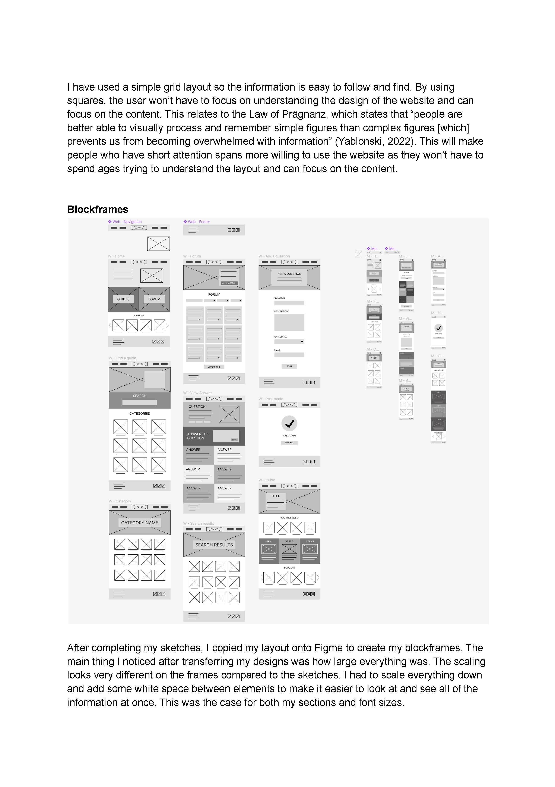
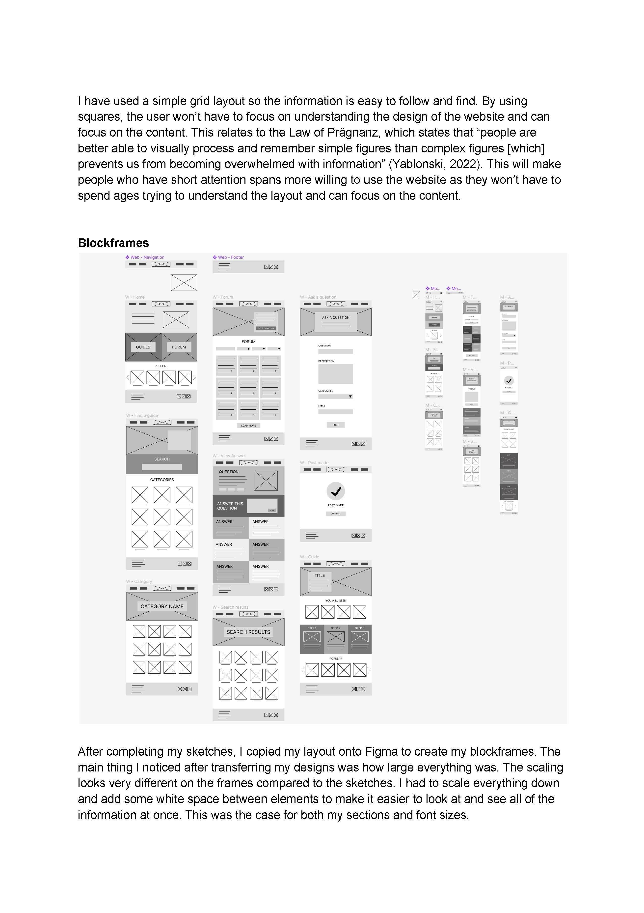


 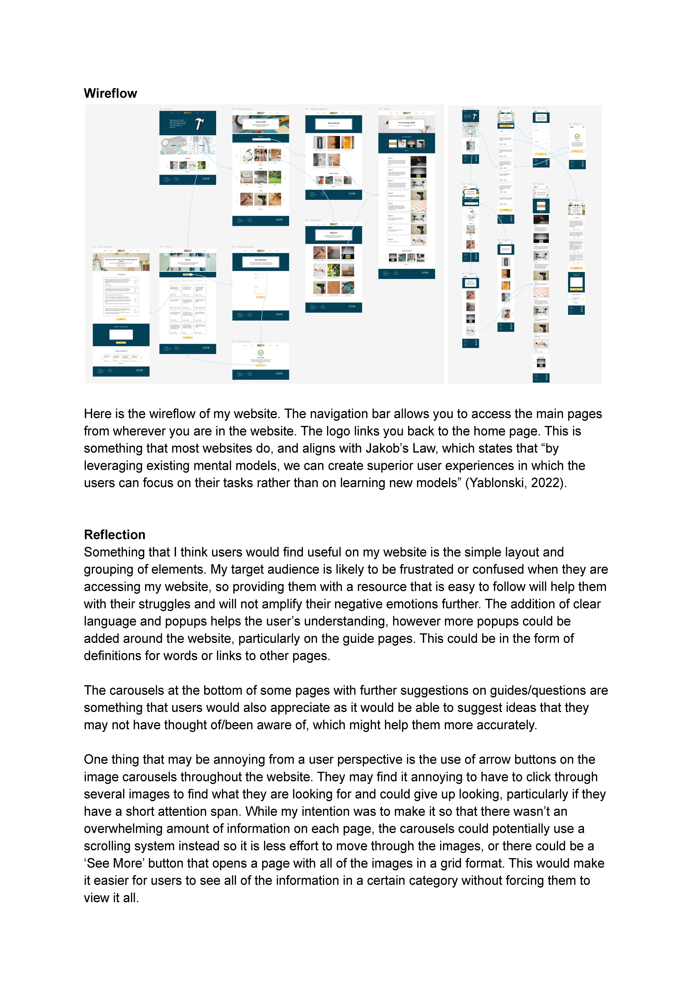
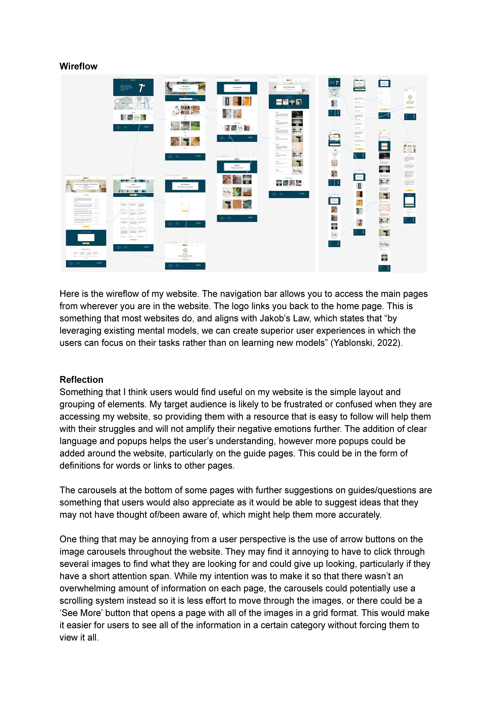
Overall, I am really happy with how this has turned out. I think it has developed well since my first iterations and is going to be relatively easy to code in the next project due to its simple grid layout. I am particularly proud of the layout of the forum and answer pages, however if I had more time I would have like to iterate my Ask a Question form and guide page more as I feel the layout could still be improved.